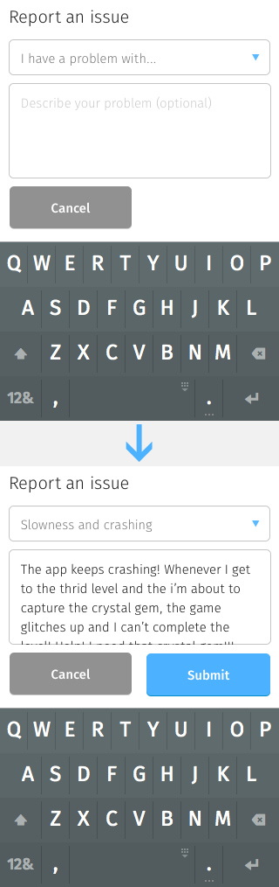
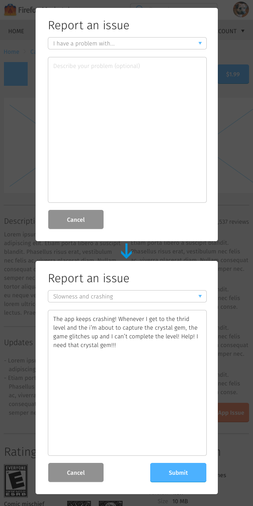
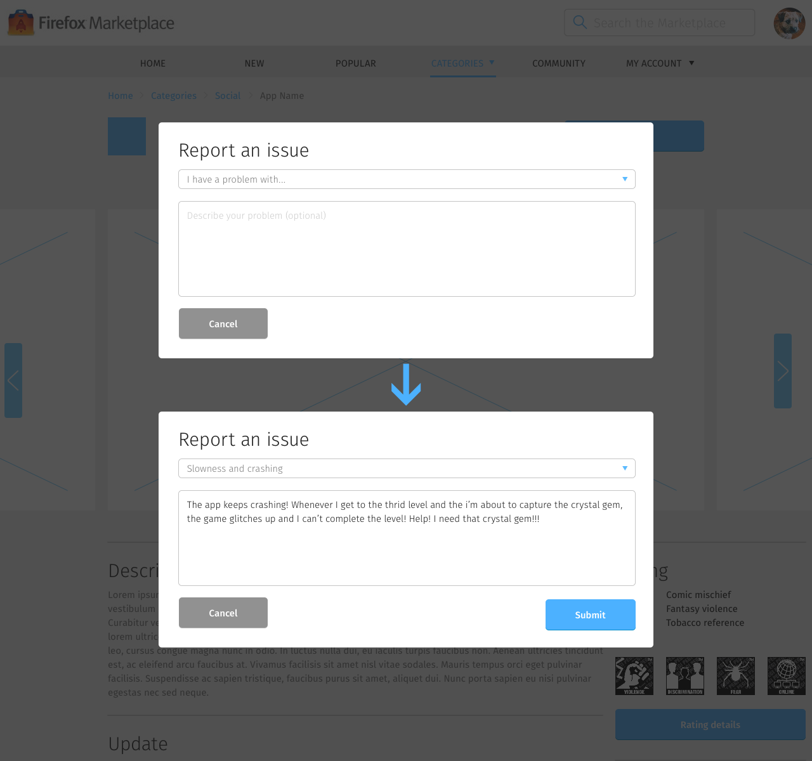

<div class="container">
	<div class="row">
		<div class="col-sm-12 col-md-12 col-lg-12">
			<h1>App Details &rarr; Report App Issue</h1>
			
      <p class="longText">Provides a way to report problems with the app and submit it to the app developer team.</p>
      
      <p class="longText">To access this interface, tap the Report an Issue button located under the Tools section of the <a href="app-details-page.html">App Details</a> page.</p>
      
      <p class="longText">This page contains:</p>
      
      <ol class="longText">
        <li><strong>I have a problem with… dropdown menu</strong>
          <ul>
            <li>Download, installation and updates</li>
            <li>Slowness, crashing and error messages</li>
            <li>App features</li>
          </ul>
        </li>
        <li><strong>Issue textbox</strong></li>
        <li><strong>Cancel button</strong>: dismisses this modal window</li>
        <li><strong>Submit button</strong>: commit report using the values inputted on dropdown menu and textbox. This button only appears after a problem has been selected and the issue textbox contained a value.</li>
      </ol>
      
      
      
      
       
      

		</div>
	</div>
	<!-- Pagination. If you have more than one page, set the multipage variable in the Frontmatter to true. Editing the pagination code happens in /_includes/homePagination.html.
		NOTE: This is currently broken in the Jekyll ver of this template.
		-->
		{% if page.multipage %}
			{% include homePagination.html %}
		{% endif %}
